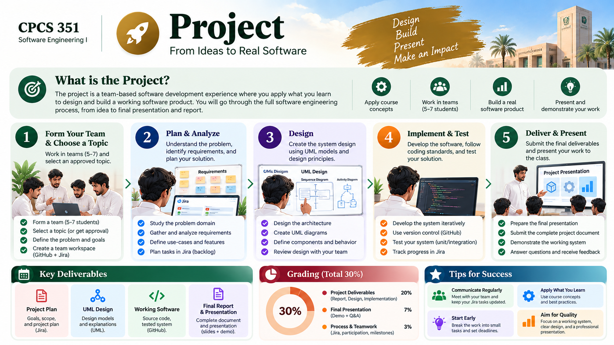

Common engineering framework
Teams may work on different instructor-approved scenarios, but every team follows the same engineering workflow, milestone structure, evidence expectations and rubric logic.
One cumulative team project connects requirements, selected models, design decisions, collaborative construction, peer review, automated testing, CI and release evidence across the semester.

Use this map to find what you need without searching through a long page. Follow the milestones in order and keep your engineering evidence connected.
One evolving team product across five cumulative checkpoints (35 marks). Keep decisions, code, reviews and tests traceable.
Every milestone improves the same evolving product and its engineering evidence.
Teams may work on different instructor-approved scenarios, but every team follows the same engineering workflow, milestone structure, evidence expectations and rubric logic.
Scope remains deliberately small—typically 3–5 meaningful features—so teams can practice traceability, review, testing and integration instead of chasing feature count.
The final package emphasizes a working release and concise engineering evidence: repository, representative issues/PRs/reviews/tests, CI/readiness evidence, demo and reflection.
The tool is not the curriculum. The competency is a traceable collaborative workflow from planned work to verified integration.
Open GitHub workspace visual →Milestones are cumulative. Feedback from one checkpoint should visibly improve the next.
Problem/scope · working agreement · repository · initial backlog/issues · ownership/workflow
Stakeholders · FR/NFR · selected stories/use cases · acceptance criteria · prioritization · traceability
Selected models · architecture/components · design decisions and rationale · consistency with requirements
Working increment · issues/branches/PRs/reviews · automated tests · integration · quality/security evidence
Integrated release · CI/readiness evidence · concise evidence package · live demo · limitations/reflection
Assessment focuses on engineering correctness, traceability, technical quality, verification evidence, process/collaboration, and justification/communication.
Requirements and acceptance criteria connect to backlog items and implementation work.
Representative issues, branches and pull requests show purposeful changes and meaningful peer review.
Tests verify important expected behavior, not exist only to satisfy a checklist.
Selected models, architecture/design choices and trade-offs are explainable and consistent.
Each student owns meaningful issue work, contributes an implementation change, participates in meaningful pull-request and peer-review work, and is ready to explain team decisions, tests and personal contribution during demos.
Commit count alone is not a contribution score. Evidence is interpreted in context: difficulty, ownership, review quality, integration and the student's ability to explain the work.
RESPONSIBLE AI IN THE PROJECT
AI Generate → Human Critique → Verify → Justify.
Download the project handbook and the companion assessment/rubrics handbook.